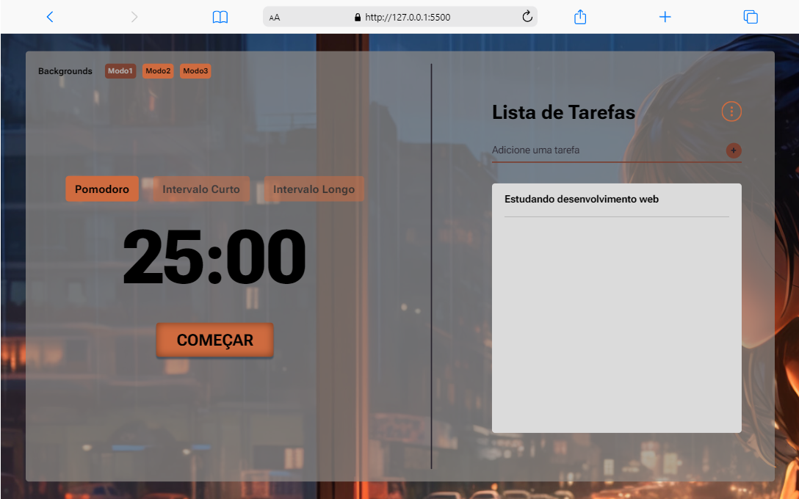

# Projetos

PomoUseFulTimer
Este projeto tem como objetivo acompanhar a gestão do tempo por meio da técnica Pomodoro, uma abordagem comprovada para aumentar a produtividade e a concentração.
HTML, CSS e JS
Series Control
Este projeto tem como objetivo acompanhar o progresso de exercícios por intervalo de séries. É possível configurar a quantidade de séries que será executada por exercício e o tempo de descanso entre cada série.
HTML, CSS e JS